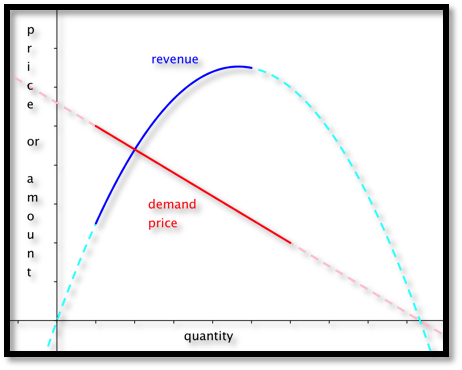
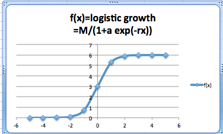
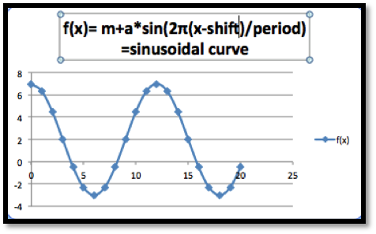
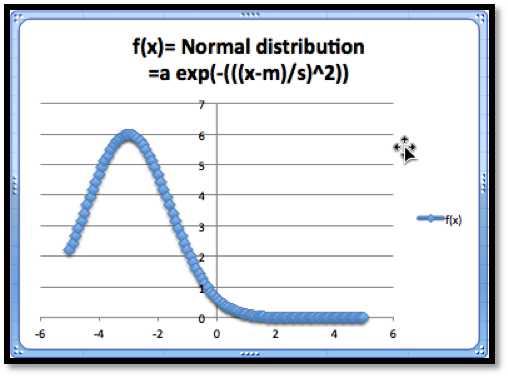
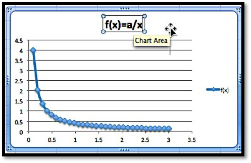
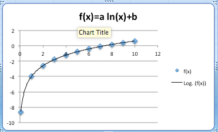

\begin{equation*}
\FutureValue: FV=PV*(1+r)^t
\end{equation*}
Section 1.2 Functions in the Business setting
Not all functions we encounter in a business setting are linear. There are several other families of functions we should (re-) familiarize ourselves with. These models include:
- Quadratic functions
- Exponential functions
- Logistic functions
- Normal distribution functions
- Sinusoidal functions
Subsection 1.2.1 Quadratic Functions
Quadratic functions should be very familiar from previous mathematics courses. They are of the form \(y=a x^2+b x+c\text{.}\) These are our standard parabolas.
In business we encounter quadratic equations when we study revenue and profit functions. Recall from your economics course that:
\begin{equation*}
\revenue=\price*\quantity=p*q
\end{equation*}
In some of the models we will investigate later in the course price will be a linear function. We will assume \(\price=m q+b\text{.}\) This implies that
\begin{equation*}
\revenue=(m q+b)*q=m q^2+b q
\end{equation*}
If \(m > 0\text{,}\) then the revenue function will look like a parabola that opens up. If \(m \lt 0,\) then the revenue function will look like a parabola that opens down.

For a quadratic model we are often very interested in the coordinates of the vertex, and any possible zeros. For the general equation \(y=a x^2+b x+c\) the sign of the coefficient of \(x^2\text{,}\) \(a\text{,}\) will determine if we have a maximum or a minimum. If \(a\) is positive, the parabola opens up and the vertex will be a minimum. If \(a\) is negative, the parabola opens down and the vertex will be a maximum.
Recall that we can find the zeros of a quadratic by using the quadratic equation.
\begin{equation*}
\text{roots or zeroes} = \frac{-b\pm\sqrt{b^2-4ac}}{2a}\text{.}
\end{equation*}
From this equation we see that the vertex must be located at \(x= -b/(2a.)\text{.}\) The discriminant (the term underneath the radical sign determines if there are 0, 1, or 2 roots.
- If \(b^2-4ac>0\text{,}\) then there are 2 roots.
- If \(b^2-4ac=0\text{,}\) then there is 1 root (the vertex will touch the axis)
- If \(b^2-4ac\lt 0\text{,}\) then there are no roots. This means the entire graph must lie above the \(x\)-axis (\(a > 0\)) or below the \(x\)-axis (\(a \lt 0\)).
Sometimes we may need more general polynomials in a model, with an equation of the form \(f(x)=a_n x^n+\cdots+a_1 x+a_0\text{.}\) In such cases we remember that the number of turning points of the graph can be no more than \(n-1\text{.}\)
Subsection 1.2.2 Exponential functions
The exponential model, with an equation of the form \(f(t)=p*e^t\text{.}\) Sometimes the exponential function \(e^t\) is denoted by \(\exp(t)\text{.}\) Excel will use this format, so it is worth looking at the notation in this case. \(f(t)=p*e^{rt}\) can also be written as \(f(t)=p*\exp(r t)\)
Exponential functions are used for proportional growth or decay. In business, compound interest is given as an exponential function. In particular, if \(P\) is the principal and \(r\) is the interest rate “compounded continuously” (expressed as a decimal), then the amount \(A\) after time \(t\) is given by \(A=P e^{rt}\text{.}\) The relationship (in general) between a future value (FV) and the present value (PV) given an interest rate \(r\) per period, with \(t\) being the number of compounding periods is given by:
It is also useful in determining a fair value today of a promised future payout. The sign of the rate will determine if the graph turns up or down.
A word of warning - Math books (and Excel) like using a base of \(e\) because it makes the mathematics easier when we do calculus, so the equation is written as \(f(t)=p*e^{rt}\) or \(f(t)=p*\exp(r t)\) where \(r\) is the instantaneous rate of change. However, in real world applications we tend to use \(f(t)=p*R^t\text{,}\) where \(R\) is the effective rate of change. We also use \(f(t)=p*(1+r)^t\text{.}\) The reader is warned that in \(R=e^r\) and both \(R\) and \(r\) are referred to as the rate. You will have to use the context to tell them apart.
When modeling real world behavior, we often know some special features of the problem. For instance, we may know that our present value is $2,000 and that we would like the future value to be $10,000 after 10 years. The question would be what function would describe such a model? A method commonly used to solve such a problem is to plug in the values we are given and see if we can determine what the remaining quantities should be. We know that \(FV=PV*(1+r)^t\text{.}\) The extra information tells us PV = 2000, and when t = 10 we know that \(FV=2000*(1+r)^{10}=10,000\text{.}\) This is enough information to solve for \(r\text{.}\) Dividing both sides by 2000 shows that \((1+r)^{10}=5\text{.}\)
To solve this equation we need rules of exponents. We obtain \(1+r=5^{1⁄10}\text{,}\) and hence \(r= 5^{1/10}-1= 0.1746\text{.}\) This means that to obtain such a growth we would need a rate of growth of about 17.46%. The function modeling that growth would be \(FV=2000*(1.1746)^t\text{.}\) In general we can set up equations and solve for the unknown quantities.
Subsection 1.2.3 Logistic Functions
The exponential model assumes growth without end. That is impossible in most business situations. Instead there is typically a point where the market is saturated. The alternative model says that the rate of change is proportional both to the current quantity and to the distance from the theoretical maximum value. This is called logistic growth. A typical formula for logistic growth given an interest rate \(r\text{,}\) market saturation point \(M\text{,}\) and constant a depending on the problem is
\begin{equation*}
f(x)= \frac{M}{1+a e^{-rx}} \text{.}
\end{equation*}
In Excel we would write this function as:
f(x)=M/(1+a exp(-r x)). Using Excel it is fairly easy to create a table and graph a logistic function.
Subsection 1.2.4 Sinusoidal Functions
The sinusoidal model is for data that repeats on a natural cycle. Typical examples would include need for heating oil, electricity for air conditioning and sales for seasonal items such as Christmas. The typical equation is
\begin{equation*}
f(x)=M+A*\sin(2\pi*(x-\text{shift})/\text{period})\text{,}
\end{equation*}
where the mean \(M\) is the average value, the amplitude \(A\) is the distance from the mean to the maximum, the period is the length of time till the cycle repeats, and the shift is where we start the cycle for \(x=0\text{.}\)
With an appropriate shift we can interchange the sine and cosine functions. (The functions \(\sin(x)\) and \(\cos(x)\) arise from trigonometry.) In this course, we will not focus on trigonometric functions and their properties. We are only concerned with having a periodic function for seasonal variations.

Subsection 1.2.5 Normal Distribution Functions
The normal distribution or bell curve is used because many populations follow a normal distribution on many scales. The equation
\begin{equation*}
f(x)=a e^{-\left(\frac{(x-m)}{s}\right)^2}
\end{equation*}
looks a bit intimidating, but we will be able to use the power of a spreadsheet to easily handle it.
In retail, there are several examples of items that follow a normal distribution. In a store selling shoes for women for instance, we would expect to see that some sizes are more prevalent than others. This would be a factor in determining what sizes to have in stock, and at what quantities. The typical scenario in which we will be using this curve model is one where we ask what range of sizes do we need to cover for the population in an area to be large enough to justify a specialty store.

The normal distribution function has certain interesting features. The graph shows a maximum value. The maximum occurs when \(x = m\text{.}\) And when \(x = m\text{,}\) we know that
\begin{equation*}
f(x)=a e^{\left(\frac{-(m-m)}{s}\right)^2}=a e^0=a*1=a\text{,}
\end{equation*}
hence the maximum value is \(a\text{.}\)
There are a few more models that will show up from time to time and are worth mentioning.
Subsection 1.2.6 Inversely Proportional Functions
If we see the phrase that two quantities are inversely proportional, it means that \(f(x)\) is a constant times \(1/x\text{.}\) We might expect to use such a model when a fixed amount of money will be spent to acquire all of a given product. Thus, we may see it used to describe price as a function of supply.

Subsection 1.2.7 Logarithmic Functions
The logarithmic model looks at equations of the form \(f(x)=a*\ln (x)+b\) or \(f(x)=a*\ln (Bx)\text{.}\) This model shows up in two ways. It can be obtained as the accumulation of a quantity that is inversely proportional to our variable. It also shows up as the inverse of the exponential model. (If \(y\) is described as an exponential function of \(x\text{,}\) then \(x\) is a logarithmic function of \(y\text{.}\))

Reading Questions 1.2.8 Reading Check
1. Reading check, Functions in the Business Setting.
This question checks your reading comprehension of the material is section 1.2, Functions in the Business Setting, of Business Calculus with Excel. Based on your reading, select all statements that are correct. There may be more than one correct answer. The statements may appear in what seems to be a random order.
- In business, compound interest is given as an exponential function.
- The normal distribution or bell curve is used because many populations follow a normal distribution on many scales.
- The exponential model models growth over prolonged periods in most business situations.
- If we see the phrase that two quantities are inversely proportional, it means that \(f(x)\) is a constant times \(1/x\text{.}\)
- Quadratic functions always have two roots.
- Present and future values is given by a linear function.
- When the rate of change is proportional both to the current quantity and to the distance from the theoretical maximum value we have logistic growth.
- In business we encounter quadratic equations when we study revenue and profit functions.
- The sinusoidal model is for data that repeats on a natural cycle.
- None of the above
Exercises 1.2.9 Exercises Functions in the Business Setting
Exercise Group.
For each model, some features of the graph are listed. Describe how to change each feature by changing the parameters of the model. (e.g., With the linear model, \(f(x)=a x+b\text{,}\) the parameters are \(a\) and \(b\text{.}\) The place where the line intercepts the \(x\)-axis is \(-b/a\text{,}\) so any \(x\)-intercept can be produced with \(a=-1\) and \(b\) equal to the desired value.)
1.
For a linear model, \(f(x)=a x+b\text{,}\) how do I get a graph with
- A positive \(y\)-intercept?
- A negative slope?
Solution.
- How to obtain a positive \(y\)-intercept: The \(y\)-intercept is determined by \(b\text{,}\) so we just let \(b\gt 0\text{.}\)
- How to obtain a negative slope: The slope is determined by \(a\) in the formula above, so we let \(a\lt 0\text{.}\)
2.
Suppose we are working with a quadratic model, \(f(x)=a x^2+b x+c\)
- How do we get a graph, that points down? (i.e. a graph that has a maximum)?
- How will we know if the graph of the function intercepts the \(x\)-axis at two positive values?
3.
For a quadratic model, \(f(x)=a x^2+b x+c\text{,}\) How do I get a graph where the vertex has \(x=5\text{?}\)
Solution.
Quadratics are parabolas and the zeros (if they exist) are at \(x= \frac{-b\pm \sqrt{b^2-4ac}}{2a}\text{.}\)
The vertex is always located at \(x= \frac{-b}{2a}\text{.}\) So if the vertex is to be at \(x = 5\) we need to make sure \(\frac{-b}{2a}=5\text{.}\) There are many ways to do this (there are infinitely many different parabolas with their vertex located at \(x = 5\)). One possible solution would be to let \(b = -10\) and \(a = 1\text{.}\)
4.
For a polynomial model, \(f(x)=a_n x^n+\cdots+a_1 x+a_0\text{,}\) how do I get a graph that goes up at both ends?
5.
For an exponential model, \(f(x)=P*\exp(r x)\text{,}\) how do I get a graph with \(f(0)=100\text{,}\) that goes to zero as x gets large?
Solution.
- \(f(0)=P*\exp(0)= P\text{,}\) so if \(f(0)=100\) we know that \(P=100\text{.}\)
- If \(f\) goes to 0 as \(x\) gets large it must be an exponential decay function which means that the coefficient \(r\) must be negative.
6.
For an exponential model, \(f(x)=P*\exp(-r x)+b\text{,}\) how do I get a graph where \(f(x)\) goes to 10 as \(x\) gets large, \(f(0)=1\text{,}\) and \(f(10)\) is at least \(9\text{?}\)
7.
For a logistic growth model, \(f(x)=\frac{M}{1+a \exp(-r*t)}\text{,}\) how do I get a graph where \(f(x)\) goes to \(10\) as \(x\) gets large, \(f(0)=1\text{,}\) and \(f(10)\) is at least \(9\text{?}\)
Solution.
We have several conditions here that need to be met. We use them to find our parameters one at a time.
-
\(f(x)\) goes to \(10\) as \(x\) gets large. If \(-r\gt 0\text{,}\) then \(a\exp(-r*x)\) gets very large as \(x\) gets large which would send \(f\) down to \(0\text{,}\) but \(f\) goes to \(10.\) So we know that \(-r\lt 0\text{.}\)When \(-r\lt 0\text{,}\) \(\exp(-r*x)\) goes to \(0\) for large \(x\text{.}\) So the whole equation must go to \(M\text{.}\) Hence \(M=10\text{.}\)
- \(f(0)=1\text{.}\) When \(x = 0\) we get \(f(x)=M/(1+a \exp(0) )=M/(1+a)=10/(1+a)=1\text{,}\) Hence \(a = 9\text{.}\)
- \(f(10)\) is at least \(9\text{.}\) With \(M = 10\) and \(a = 9\) we have that \(f(10)=10/(1+9 \exp(-r*10) )\gt 9\) This implies that \(1+9 \exp(-r*10)\lt 10/9\) and hence \(\exp(-r*10)\lt 1/81\text{.}\) This means that \(r\gt -1/10 \ln(1/81)= 0.44\)
8.
For a sinusoidal model, \(f(x)=M+A \sin(2\pi(x+\text{shift})/\text{period})\text{,}\) based on seasonal change through the year, if \(x\) is measured in months, what value should period have?
9.
For a normal model, \(f(x)=a \exp\left(-\left(\frac{x-m}{s}\right)^2\right)\text{,}\) how do I produce a graph with a high point at \((7, 20)\text{,}\) and the value of \(f(4)\) between 1 and 2? (You need to use trial and error on this problem.)
Solution.
- The high point of the graph occurs when \(\frac{x-m}{s}=0\text{.}\) This happens at \(x = 7\text{,}\) so this means that \(m = 7\) as well.
- Once we know that \(m = 7\text{,}\) then \(f(7)=a \exp\left(-\left(\frac{7-7}{s}\right)^2 \right)=a \exp(0)=a\) But \(f(7)=20\text{,}\) so \(a = 20\text{.}\) This means that \(f(x)=20 \exp\left(-\left(\frac{x-7}{s}\right)^2\right)\text{.}\)
- If the value of \(f(4)\) is between \(1\) and \(2\text{,}\) \(f(4)=20 \exp\left(-\left(\frac{4-7}{s}\right)^2\right)\) is between \(1\) and \(2\text{.}\) We can solve for \(s\)\begin{equation*} 1\lt 20 \exp\left(-\left(\frac{4-7}{s}\right)^2\right)\lt 2 \end{equation*}\begin{equation*} 1/20\lt \exp\left(-\left(\frac{4-7}{s}\right)^2\right)\lt 1/10 \end{equation*}\begin{equation*} \ln (1/20)\lt \left(-\left(\frac{4-7}{s}\right)^2\right)\lt \ln (1/10) \end{equation*}\begin{equation*} \ln (1/20)\lt \frac{-9}{s^2}\lt \ln (1/10) \end{equation*}and hence\begin{equation*} 2.3026\lt \frac{9}{s^2} \lt 2.996 \end{equation*}So \(s^2\gt \frac{9}{2.996}\) and \(s^2\lt\frac{9}{2.3026} \text{.}\) Hence \(1.734\lt s\lt 1.977\text{.}\)
10.
For a normal model, \(f(x)=a \exp\left(-\left(\frac{x-m}{s}\right)^2\right)\text{,}\) how do I produce a graph with a high point at \((7, 20)\text{,}\) and the value of \(f(1)\) between 1 and 2? (You need to use trial and error on this problem.)
11.
For the power model, \(f(x)=a x^b\text{,}\) how do I produce a graph with \(f(1)=5\) and \(f(3)=1\text{?}\)
Solution.
\(f(1)=5\) means that \(a 1^b=a=5\text{.}\)
\(f(3)=1\) means that \(a x^b=5*3^b=1\) hence \(3^b=0.2\) and hence \(\ln(3^b )=\ln(0.2)\text{.}\)
So \(b \ln(3)=\ln(0.2)\) which implies that \(b=\ln(0.2)/\ln(3) \approx -1.465\text{.}\)
12.
For the inversely proportional model, \(f(x)=a/x\text{,}\) how do I produce a graph with \(f(1) \lt 0\) and \(f(3)=-5?\)
13.
For the logarithmic model, \(f(x)=a \ln(x)\) how do I produce a graph with \(f(e)=3\text{?}\)
Solution.
\(f(e)=a \ln(e)=a (1)= a\text{,}\) hence \(a = 3\)
Exercise Group.
For each situation, explain which model you would use for each situation (linear, quadratic, etc.). Be sure to explicitly mention what you are using as the free variable (the equivalent of x), what you are using as the dependent variable (the equivalent of y), and why that model makes sense in the given situation.
14.
The cost of producing an amount of a product is the sum of the fixed costs, like warehouse rent, and the variable costs, like labor and materials, which we can assume to be the same for each unit produced.
15.
When looking at revenue, we can assume that sales will be linear function of the price of the object.
Solution.
Using a linear model we get \(\Sales=m *\price+b\text{.}\)
Price is the free variable (the input) and sales is the dependent variable (the output)
16.
The amount I expect to be able to withdraw from an account at a future date, assuming that interest is compounded continuously and is fixed.
17.
The amount of time it takes an investment to double assuming a fixed interest rate.
Solution.
The Future value is given by \(FV=PV*(1+r)^t\)
Here the Future value (\(FV\)) will be the input (it will be \(2*PV\)) and the output will be the time \(t\text{.}\)
18.
The amount of electricity needed for air conditioners in a Washington, D.C. at various times of the year.
19.
The amount of metal needed to build a fuel tank as a function of the amount of fuel to be stored.
Solution.
Volume is 3-dimensional and the metal would be related to the surface area — which is 2-dimensional — so the formula would be something like:
\begin{equation*}
\text{Amount of metal}=K*(\Volume)^{3/2}\text{.}
\end{equation*}
\(\Volume\) is the input, the \(K\) is some constant and \(\text{Amount of Metal}\) is the output.
20.
The total length of booms needed to contain an oil spill as a function of the size of the spill.
21.
The monthly sales of a hot new electronic device in a country.
Solution.
Sales will likely increase a lot initially, but then level out. So a logistic equation may be a reasonable model.
\begin{equation*}
f(x)= M/(1+a e^{-rx} )\text{.}
\end{equation*}
22.
The distribution of sales of pairs of pants by leg length.